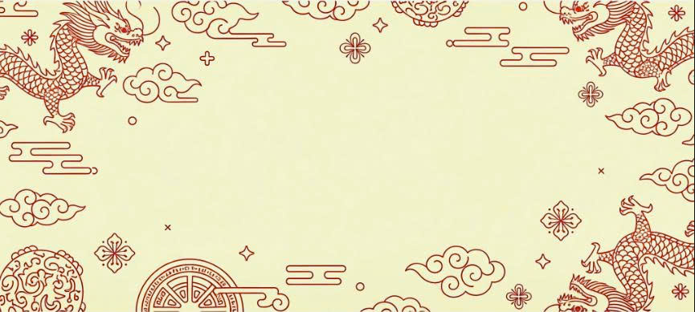

Festival Huế 2025
Di sản xưa – Hơi thở mới


Festival Huế 2025
Di sản xưa – Hơi thở mới
FESTIVAL
Nơi giao thoa văn hóa, tôn vinh nghệ thuật và bản sắc truyền thống cố đô

Nghệ thuật
Tinh tế, độc đáo, phản ánh chiều sâu văn hóa và hồn cốt cố đô

Ẩm thực